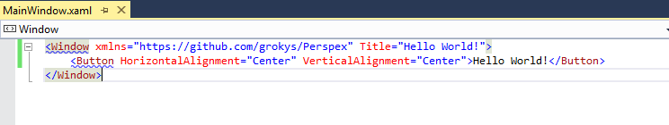
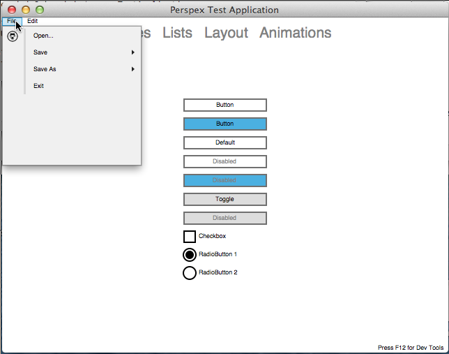
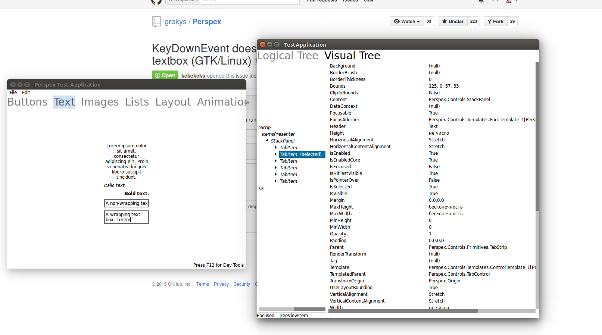

The Perspex UI Framework
Cross platform .NET UI Framework with bindings and XAML
Current status
We're pleased to announce that Perspex is now in alpha!
What does alpha mean? Well, it means that it's now at a stage where you can have a play and hopefully create simple applications. There's now a Visual Studio Extension containing project and item templates that will help you get started, and there's an initial complement of controls. There's still a lot missing, and you will find bugs, and the API will change, but this represents the first time where we've made it somewhat easy to have a play and experiment with the framework.
How do I try it out
The easiest way to try out Perspex is to install the Visual Studio Extension.
This will add a Perspex project template and a Window template to the standard Visual Studo "Add" dialog (yes, icons still to come :) ):

Creating a Perspex Project will give you a simple project with a single XAML window. We even have a simple designer:

You can also find the project on GitHub
News
You can read news about Perspex on Groky's blog
Cross Platform
For now we can run on Windows, Linux and Mac.

Inspection support
